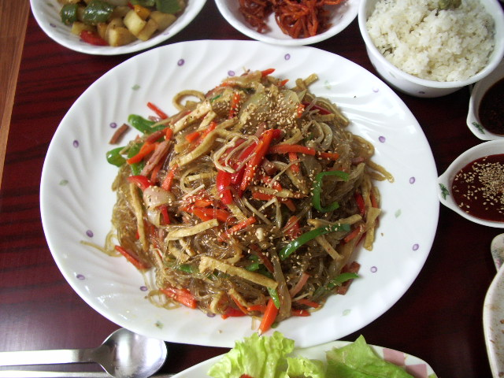

Home
Japchae

Description
Serve japchae noodles hot, chilled, or at room temperature. These Korean glass noodles are delicious with teriyaki chicken or short ribs.
Ingredients
- ½ pound Korean dang myun noodles
- 2 ½ teaspoons sesame oil, divided
- 2 tablespoons soy sauce
- 2 teaspoons white sugar
- Gather the ingredients.
- Fill a large pot with lightly salted water and bring to a rolling boil. Cook noodles in boiling water, stirring occasionally, until tender yet firm to the bite, 4 to 5 minutes. Drain, then rinse with cold water. Toss noodles with 1 teaspoon sesame oil; set aside.
- Whisk together soy sauce and sugar in a small bowl; set aside.
- Heat vegetable oil in a skillet over medium-high heat. Cook and stir carrots, asparagus, onions, and garlic in hot oil until softened, about 5 minutes.